Overview
In this project, we have successfully implemented two key sections: Section 1 focusing on Bezier Curves and
Surfaces, and Section 2 dedicated to Triangle Meshes and the Half-Edge Data Structure. In the first section, we've
developed Bezier Curves utilizing the 1D de Casteljau Subdivision method, along with Bezier Surfaces through the
application of Separable 1D de Casteljau techniques. The second section features the implementation of
Area-Weighted Vertex Normals, Edge Flip, Edge Split, and Loop Subdivision for Mesh Upsampling.
Bezier curves and surfaces are fundamental in modeling smooth curves and surfaces, with Bezier surfaces offering
the benefit of representing complex forms using less memory compared to triangle meshes. However, rendering Bezier
curves directly presents challenges. This is primarily due to the extensive number of control points and weights
that Bezier surfaces comprise, leading to significant computational and storage demands, especially for surfaces
of higher order. As a practical solution, Bezier surfaces are typically converted into triangle meshes prior to
rendering. Given this, triangle meshes are often favored for representing 3D geometric models.
A common method to store triangle meshes involves using a vertex list and a corresponding list of triangles that
index these vertices. Yet, this structure proves inefficient for meaningful mesh traversal. For example,
identifying all triangles adjacent to a specific triangle necessitates iterating through the entire list, a
time-consuming task. To address this issue more efficiently, we have employed the half-edge data structure. This
approach efficiently captures the connectivity information among mesh elements, streamlining operations such as
neighbor identification and traversal within the mesh.
Section I: Bezier Curves and Surfaces
Part 1: Bezier Curves with 1D de Casteljau Subdivision
Briefly explain de Casteljau's algorithm and how you implemented it in order to evaluate Bezier curves.
The de Casteljau algorithm is adeptly designed to process 'n' control points alongside a parameter 't' to define a
Bezier curve. The control points collectively outline the shape of the curve, while the parameter 't', which
varies between 0 and 1, is crucial for evaluating the curve at specific points. Central to this algorithm is the
technique of linear interpolation, utilized to compute 'n – 1' intermediate control points for each subdivision
level. These points, denoted as p’1, p’2, …, p’n-1, are calculated using the formula p’i = (1 – t) * pi + t *
p(i+1). By recursively applying this process, the algorithm ultimately converges to a singular point that
precisely corresponds to the parameter 't' on the Bezier curve.
Our implementation of this algorithm iteratively processes the input, represented as a std::vector
Take a look at the provided .bzc files and create your own Bezier curve with 6 control points of your choosing. Use this Bezier curve for your screenshots below.
Show screenshots of each step / level of the evaluation from the original control points down to the final evaluated point. Press E to step through. Toggle C to show the completed Bezier curve as well.
|
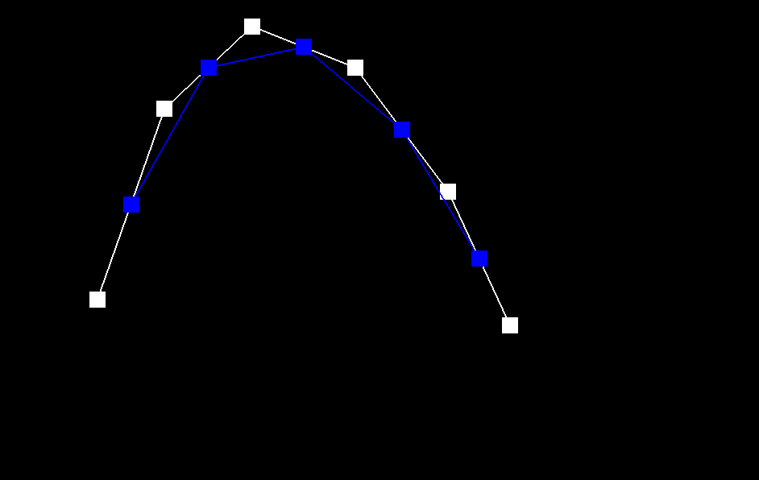
|
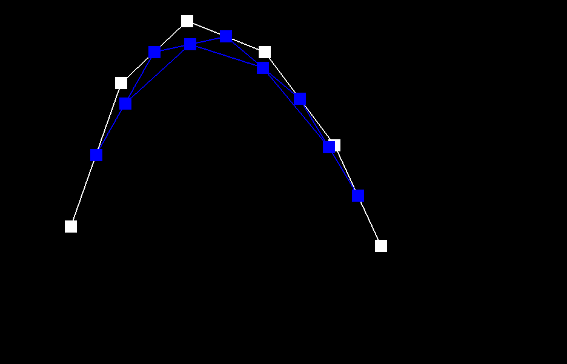
|
|
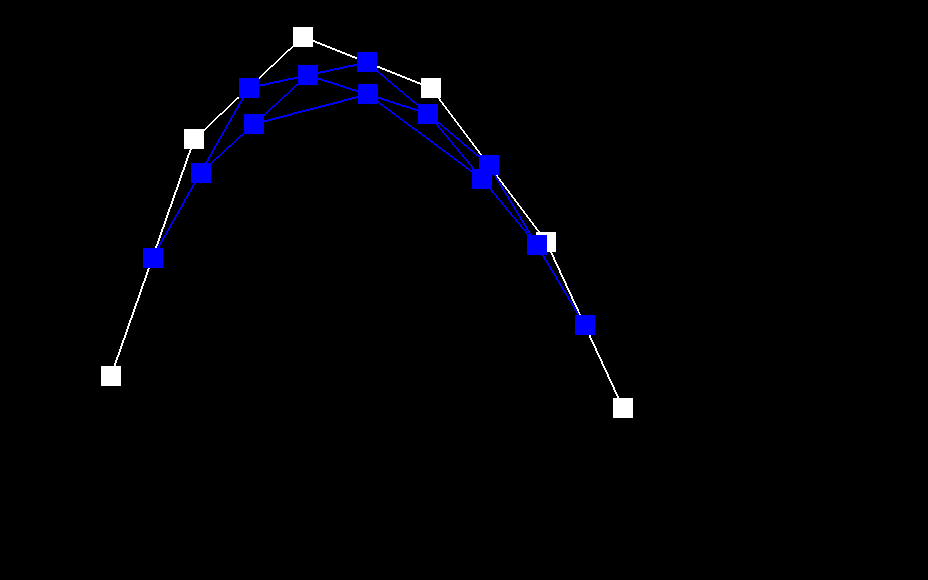
|
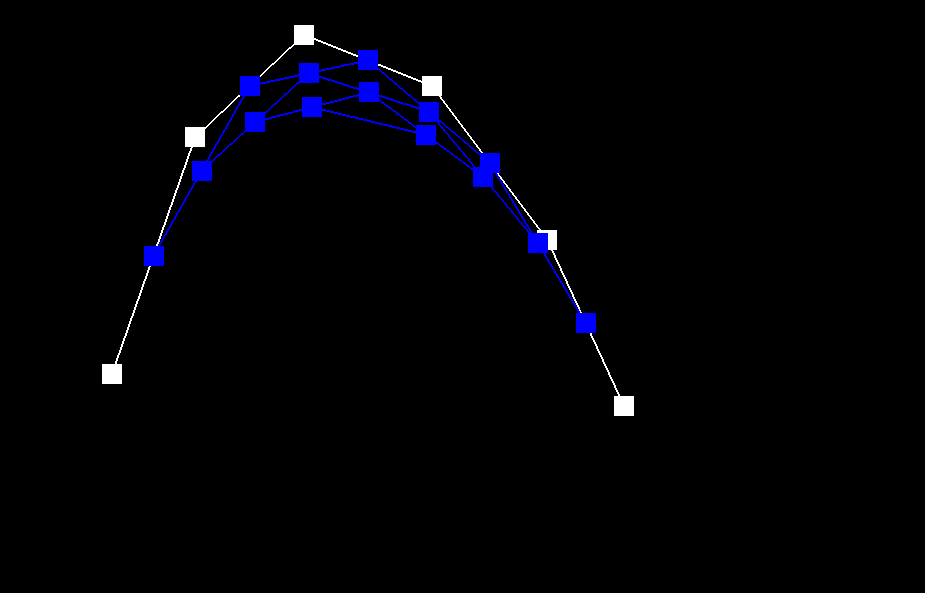
|
|
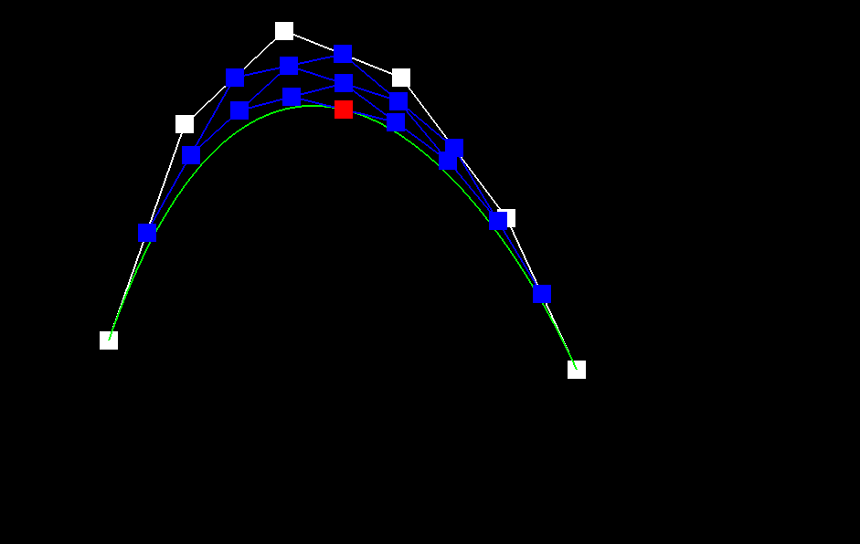
|
Show a screenshot of a slightly different Bezier curve by moving the original control points around and modifying the parameter \(t\) via mouse scrolling.
Part 2: Bezier Surfaces with Separable 1D de Casteljau
Briefly explain how de Casteljau algorithm extends to Bezier surfaces and how you implemented it in order to evaluate Bezier surfaces.
The input of the algorithm changes to n x n original control points Pij, where i and j are row and column index,
and the two parameters u and v. For each row of n control points, we can define a Bezier curve parameterized by u.
We can recursively use the algorithm in Part 1 to evaluate the final single point Pi on Bezier curve i. Then we
consider that Pi for n rows define a Bezier curve parameterized by v. We can again recursively use the algorithm
in Part 1 to evaluate the final, single point P on the Bezier curve parameterized by v. The final, single point P,
lies on the Bezier surface parameterized by the u and v.
For the BezierPatch::evaluateStep function, we extend the coordinates from 2D space to 3D space. For i = 0 to n –
2, we compute the n – 1 intermediate points by Vector3D lerp = (1.0 - t) * points[i] + t * points[i + 1]. If there
is only one point in the input, we directly return that point. The BezierPatch::evaluate1D function recursively
call itself until it generates the final, single point lying on the Bezier curve. In function
BezierPatch::evaluate, we first call BezierPatch::evaluate1D n times to compute the n final, single points
parameterized by u. Then we call BezierPatch::evaluate1D again, using these n points and the parameter v as input.
Eventually we generate the final single point lying on the Bezier surface at the given parameter u and v.
Show a screenshot of bez/teapot.bez (not .dae) evaluated by your implementation.
Section II: Triangle Meshes and Half-Edge Data Structure
Part 3: Area-Weighted Vertex Normals
Briefly explain how you implemented the area-weighted vertex normals.
Our process begins with a specific halfedge, labeled as s2, the vector from v0 to v2 (v2 - v0), originating from
vertex v0. To determine the final normal vector, it's essential to traverse all the halfedges connected to vertex
v0 and compute the normal vector for each adjacent face. We employ the “next()” and “vertex()” methods to
ascertain the positions of the two neighboring vertices in a given face, for instance, vertices v1 and v2 in our
case.
Once these vertices are identified, we calculate the edge vectors: s1, which is the vector from v0 to v1
(expressed as v1 - v0), and s2, the vector from v0 to v2 (v2 - v0). These vectors are pivotal for computing the
face's normal vector through the cross-product operation, denoted as s1×s2. Additionally, the normal vector is
assigned a weight corresponding to the area of the face, which is also derived using the cross-product magnitude
(||s1×s2||/ 2).
This procedure is repeated for the other halfedges and faces connected to vertex v0, culminating in the
accumulation of the normal vectors. The final step involves normalizing the sum of these vectors to a norm of 1,
thus yielding the resultant final normal vector.
Show screenshots of dae/teapot.dae (not .bez) comparing teapot shading with and without vertex normals. Use Q to toggle default flat shading and Phong shading.
|
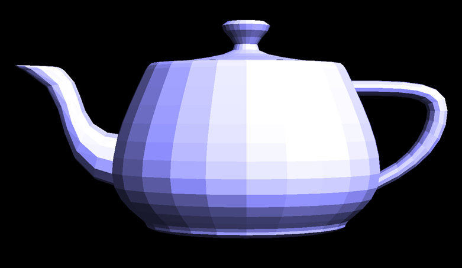
|
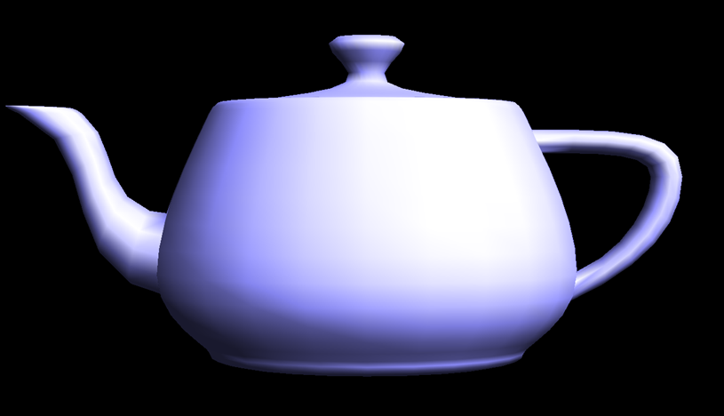
|
Observing the results, it's apparent that prior to the application of vertex normals, the colors in the image are distinctly segmented. However, upon enabling vertex normals, there is a notable transformation in the image's appearance. The overall visual becomes markedly smoother, a change attributable to the weighted computation of the vectors involved.
Part 4: Edge Flip
Briefly explain how you implemented the edge flip operation and describe any interesting implementation / debugging tricks you have used.The process is based on the figure below:
To accurately reflect these modifications in our model, we employ the “setNeighbors” function. This crucial step updates the connections and orientations of the involved halfedges. Furthermore, due to the edge flip, it's essential to revise the halfedge references for both the four vertices and the two faces. Such updates ensure that our data structure remains consistent and accurately represents the new configuration after the edge flip.
Show screenshots of the teapot before and after some edge flips.

|
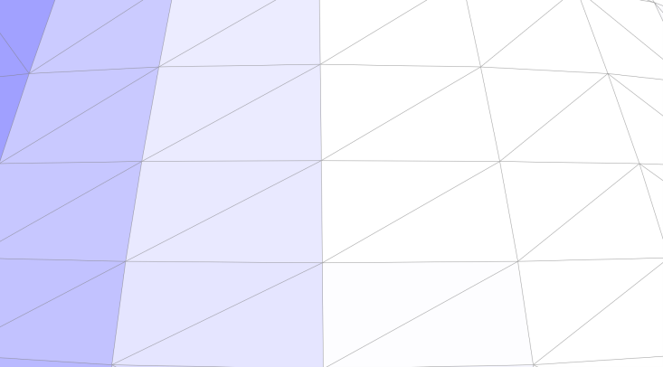
|
|
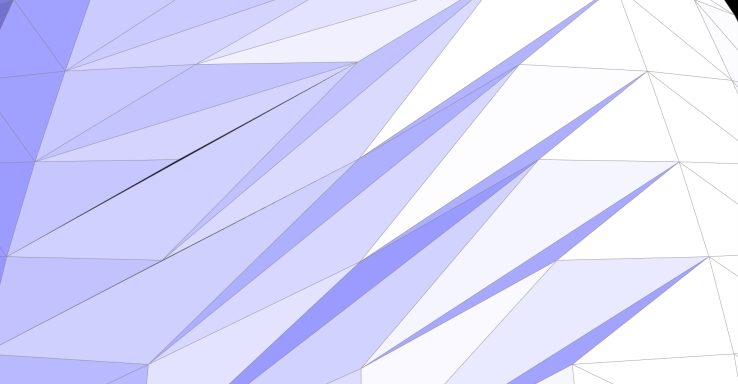
|
Part 5: Edge Split
Briefly explain how you implemented the edge split operation and describe any interesting implementation / debugging tricks you have used.The execution of this task bears resemblance to the approach we adopted in task 4. Fundamentally, it involves modifying pointers and attributes of various elements, including halfedges, vertices, edges, and faces. This process is methodically guided by the diagram provided below:
During the process of edge splitting, we modify h0 to represent BM and h1 to signify MB. Following these changes, it becomes imperative to use the "setNeighbors" function. This function is essential for updating the connectivity and attributes of the halfedges. It is important to note that these modifications might also impact the existing vertices and faces. For instance, the halfedge of the face AMB, which was originally ABC, is now BM instead of BC. As such, updates are also required for these elements to ensure that our model accurately reflects the new structural configuration.
Show screenshots of a mesh before and after some edge splits.
|
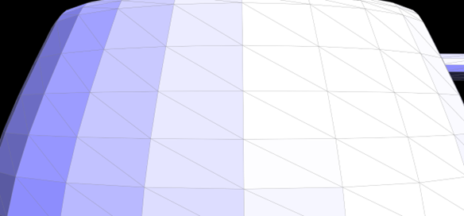
|
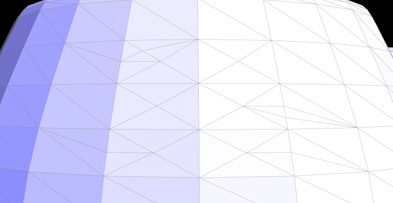
|
Show screenshots of a mesh before and after a combination of both edge splits and edge flips.
|
|
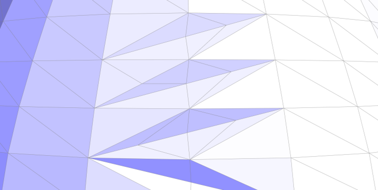
|
Write about your eventful debugging journey, if you have experienced one.
During the debugging phase, we frequently encountered an issue where selecting an edge for splitting inadvertently caused additional edges to split, and some segments of the mesh darkened. This phenomenon was traced back to an inadequacy in our previous variable update process. A notable example is the failure to update the halfedge of a face, leading to a cascade of errors in the model. Consequently, when executing the loop subdivision, a variety of unexpected and anomalous images emerged, indicating inconsistencies in our geometric representation.
Part 6: Loop Subdivision for Mesh Upsampling
Briefly explain how you implemented the loop subdivision and describe any interesting implementation / debugging tricks you have used.
In this task, we leverage our previously implemented edge flip and split functions to facilitate the comprehensive
subdivision of Bezier surfaces.
General process
(1)First, we calculate new positions for all original vertices in the input mesh. The formula used is: (1 - n * u)
* original_position + u * original_neighbor_position_sum. We begin by iterating over all vertices in the mesh,
starting from "mesh.verticesBegin()" and ending at "mesh.verticesEnd()". Each vertex is accessed through its
halfedge, enabling us to locate and sum up the positions of all neighboring vertices. We then apply the
aforementioned formula to compute the new position for each vertex.
(2)This step mirrors the previous one, but focuses on traversing all edges to pre-calculate the positions of new
edge points.
(3)In this phase, we split edges in the mesh, ensuring that only edges with both vertices being old are selected
for splitting. This criterion was established during the first process.
(4)We proceed to flip any new edge that connects an old vertex to a new one. This is achieved using an XOR logical
expression to validate the condition. Additionally, we check to confirm that the edge in question is indeed a new
edge, as old edges are not eligible for flipping.
(5)Finally, we assign new positions to the vertices based on the values computed and stored during the first two
processes.
Take some notes, as well as some screenshots, of your observations on how meshes behave after loop subdivision. What happens to sharp corners and edges? Can you reduce this effect by pre-splitting some edges?
The loop subdivision results for quad ball, cube, and beans are as follows:
|
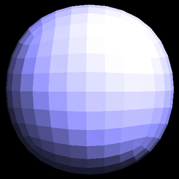
|
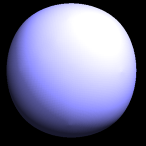
|
|
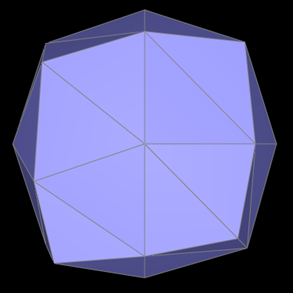
|

|
|
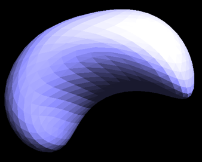
|
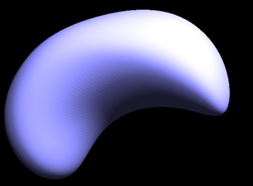
|
The most noticeable effect of our process is the significant smoothing of edges and sharp corners in most images. For instance, in the "quadball" image, the original edges and corners are distinctly pronounced. However, following the loop subdivision, the image undergoes a transformation, resulting in a representation that closely resembles an actual ball.
Yet, as observed in the "cube" image, while the edges and sharp corners do become smoother, this sometimes leads to the image stretching towards these corners, causing an asymmetrical appearance. This issue can be mitigated by carefully splitting the edges in the original image. Further details on this solution are provided below.
Load dae/cube.dae. Perform several iterations of loop subdivision on the cube. Notice that the cube becomes slightly asymmetric after repeated subdivisions. Can you pre-process the cube with edge flips and splits so that the cube subdivides symmetrically? Document these effects and explain why they occur. Also explain how your pre-processing helps alleviate the effects.
(1) The results of the cube image after loop subdivision are as follows:
|
|
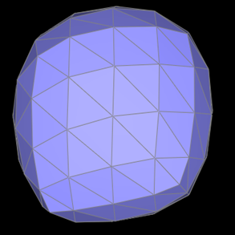
|
|
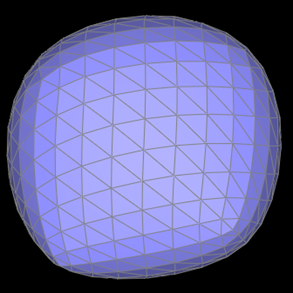
|
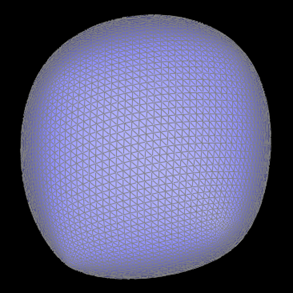
|
(2) Asymmetry: Upon close examination, a notable asymmetry is observed in the subdivided cube, particularly a stretching effect towards the lower left and upper right corners. This asymmetry is primarily attributed to the initial topology of the cube, which lacks sufficient symmetry (each face of the cube features only a single diagonal). This structural limitation in the cube's design can result in uneven or asymmetric characteristics in the mesh post-subdivision, manifesting as warping or stretching.
(3) Solution: To address this issue, a preprocessing step is applied to the original cube. The strategy involves splitting the diagonal on each face of the cube, effectively creating an "X" shape on each face, as depicted in the accompanying figure. This modification ensures that the cube's faces are symmetrical, thus mitigating the asymmetry observed in the subdivision process.
The subdivision image after preprocessing is shown in the figure below, and it is obvious that the image quality has improved a lot.

|
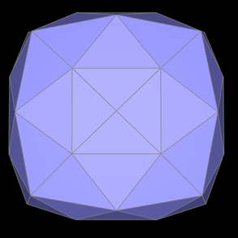
|
|
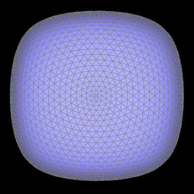
|